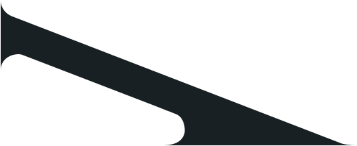

Микросервисы на GO 3.0

Научись разрабатывать высокопроизводительные, масштабируемые микросервисы, как в ВК Yandex OZON СБЕР Тинькофф, и увеличь свои шансы на трудоустройство в BigTech или повышение грейда
Курс адаптирован под частые проблемы backend-a,
которые встречаются на работе
Перехожу на Go — хочу быстро адаптироваться и не писать как на старом языке
Узнаешь все необходимое про внутрянку Go и микросервисную архитектуру: HTTP, OpenAPI, gRPC, Kafka, Redis, Postgres, Prometheus, Grafana, Jagger, Elasticsearch, Kibana, Envoy, OpenTelemetry и др., чтобы сменить стек без потери в ЗП и сразу работать на интересных проектах.
Пишу на Go, но застрял в типовых задачах — хочу расти дальше
Узнаешь лучшие практики, нюансы и лайфхаки построения микросервисов, которые применяются в бигтехах, чтобы вырасти из рутины и начать решать сложные инженерные задачи.
Хочу уверенно проходить собесы и повысить свой грейд и зарплату
Напишешь реальный проект из 5 микросервисов, разберёшься как всё взаимодействует между собой и сможешь уверенно отвечать на вопросы по архитектуре и технологиям на собесах в топовые компании.

Вся подкапотная микросервисов в одном курсе
1. Разработаешь 5 микросервисов, связанных между собой через Kafka и gRPC,
с изоляцией от внешнего мира с помощью Envoy Gateway
2. Обеспечишь мониторинг сервиса по стандарту OpenTelemetry с юнит-тестами,
чтобы исключить ошибки в работе
3. Освоишь кеширование данных с помощью Redis
и асинхронное взаимодействие между микросервисами с помощью Kafka
4. Освоишь работу с PostgreSQL,
напишешь свою платформенную библиотеку, упрощающую разработку
5. Реализуешь межсервисное взаимодействие,
систему аутентификации и авторизации
6. На практике научишься применять
архитектурные подходы построения микросервисов
8 недель. 5 микросервисов. Production-ready стек.
gRPC — язык, на котором говорят микросервисы
- Protocol Buffers с нуля — описываем контракт сервиса в ".proto"-файле
- buf — генерируем Go-код одной командой вместо ручной возни с
protoc - Поднимаем gRPC-сервер и клиент — полноценный CRUD для управления данными
- Интерцепторы: перехватываем каждый запрос — логирование, перехват паник и кастомная логика
- gRPC-Gateway + Swagger UI — один сервис, два протокола: REST снаружи, gRPC внутри
- Валидация входных данных — отсекаем невалидные запросы ещё до попадания в бизнес-логику
HTTP — REST API на промышленном уровне
- Chi — самый популярный Go-роутер — маршруты, цепочки middleware, таймауты и корректное завершение работы
- Сначала контракт, потом код — описываем OpenAPI-спецификацию, получаем типизированный сервер с валидацией из коробки через Ogen
- HTTP вызывает gRPC — связываем сервисы между собой: HTTP-фронтенд обращается к gRPC-бэкенду
Go Workspace — мультимодульный проект
- go.work для нескольких сервисов — общие proto-определения, общие зависимости, единый репозиторий
Реализовать 3 микросервиса: OrderService (HTTP), InventoryService (gRPC), PaymentService (gRPC). Связать их через gRPC-клиенты — заказ обращается к складу и платёжке.
Ты с нуля напишешь 3 работающих сервиса на двух протоколах, освоишь кодогенерацию API из контрактов и научишься связывать микросервисы между собой. Это фундамент, на котором строится всё остальное.
Слоистая архитектура — структура, которую поймёт любой разработчик
- API → Service → Repository → Client — чёткое разделение ответственности
- Три модели данных — модель API, доменная модель, модель хранилища: зачем их разделять и как конвертировать между собой
- Инверсия зависимостей — интерфейсы определяет тот, кто использует, а не тот, кто реализует
- Стратегия обработки ошибок — единые ошибки-маркеры на каждом слое, понятная цепочка от базы до клиента
Unit-тесты — от нуля до полного покрытия за 7 шагов
- Первый тест на чистом Go —
testing.T, никаких фреймворков - Табличные тесты — один тест, десять сценариев: описываем входы и ожидаемые результаты
- testify — читаемые проверки вместо ручных
if err != nil - Стабы: подменяем зависимости вручную — простая реализация в памяти вместо реальной базы
- mockery — генерируем моки автоматически — задаём ожидания, проверяем вызовы
- Тесты в Clean Architecture — мокаем репозиторий, тестируем бизнес-логику изолированно
- Параллельные тесты — запускаем тесты одновременно и не ловим гонки
Рефакторинг всех 3 сервисов в Clean Architecture. Unit-тесты с моками на сервисный и API-слой. Покрытие ≥40%.
Код разложен по чётким слоям — бизнес-логика отделена от транспорта и хранилища. Любой новый разработчик откроет проект и сразу поймёт, где что лежит. Тесты с моками ловят баги до продакшена, а не после
Docker — упаковываем сервис в контейнер
- Многоэтапная сборка Docker-образа — 800 МБ Go SDK превращаются в 10 МБ финальный образ
- Запуск не от root — безопасно, как требуют в продакшене
- Docker Compose — база данных, миграции и сервис поднимаются одной командой
- Healthcheck и зависимости — контейнеры стартуют в правильном порядке
PostgreSQL — SQL на Go без боли
- pgx — самый быстрый драйвер для PostgreSQL с пулом соединений (переиспользуем подключения, а не создаём новые на каждый запрос)
- Squirrel — SQL-конструктор — собираем запросы программно, без склейки строк
- Миграции через Goose — версионируем схему базы, накатываем изменения при деплое
- Практические приёмы — получаем ID сразу при вставке, работаем с nullable-полями, избегаем SQL-инъекций
Транзакции — атомарность без компромиссов
- Transaction Manager — оборачиваем несколько операций в транзакцию, не протаскивая объект транзакции через все слои
- Прозрачные транзакции — репозиторий даже не знает, что работает внутри транзакции — всё скрыто в контексте
Поднять PostgreSQL через Docker Compose для OrderService и InventoryService. Написать миграции, заменить хранение в памяти на реальные SQL-запросы. Интегрировать Transaction Manager для атомарного создания заказа
Хранилище в памяти заменено на PostgreSQL. Ты умеешь поднимать инфраструктуру через Docker Compose, делать миграции, писать запросы и проектировать хранилища. Паттерн Transaction Manager — один из самых частых вопросов на собеседованиях
Конфигурация — параметры сервиса без хардкода
- YAML + переменные окружения через cleanenv — один конфиг-файл, переопределения через переменные окружения для каждого стенда
- Профили: local / production / docker — переключаем поведение без изменения кода
DI-контейнер — управление зависимостями без магии
- Ручной DI на Go — создаём зависимости лениво: только когда понадобятся
- Корректное завершение работы — ресурсы закрываются в обратном порядке: что открыли последним — закрываем первым
- Платформенная библиотека — проверка здоровья сервиса, логгер, менеджер закрытия ресурсов: переиспользуемые компоненты для всех сервисов
JSONB — гибкие структуры в PostgreSQL
- JSONB-колонки — храним разнородные данные (характеристики разных типов деталей) в одной колонке без раздувания схемы
- Индексы по JSON — быстрый поиск внутри JSON-структур
Domain-Driven Design — бизнес-логика, которая сама себя защищает
- Сущности с поведением — объекты сами знают свои правила, а не просто хранят данные
- Value Objects — типизированные значения (например, «прочность корпуса»), которые нельзя создать в невалидном состоянии
- Агрегаты — группа связанных объектов с единой точкой входа, которая контролирует целостность данных
- Доменный сервис — проверка совместимости компонентов корабля перед заказом
- Резервирование деталей — Reserve/Release с защитой от невалидных состояний
Внедрить конфигурацию и DI-контейнер во все сервисы. Создать платформенную библиотеку. Реализовать DDD: сущность Part с методами Reserve/Release, Value Objects для свойств компонентов в JSONB, сервис проверки совместимости при заказе
Сервисы конфигурируются через YAML и переменные окружения, зависимости собираются через DI-контейнер, ресурсы корректно освобождаются при завершении. Бизнес-логика защищена доменной моделью — невалидное состояние невозможно создать в принципе. Ты строишь не просто сервисы, а платформу — как это делают в BigTech-компаниях
Apache Kafka — шина событий для микросервисов
- Синхронный и асинхронный продюсер — гарантия доставки каждого сообщения vs максимальная пропускная способность
- Консюмер — читаем поток событий — смещения, партиции, чтение с начала или с конца
- Consumer Groups — горизонтальное масштабирование — несколько экземпляров сервиса делят между собой поток сообщений, автоматически перераспределяя нагрузку
- Обработка сообщений пачками — накапливаем и обрабатываем группой для производительности
- Kafka в Clean Architecture — выделяем слои для асинхронных потоков так же, как для HTTP и gRPC
SELECT FOR UPDATE — блокировки в PostgreSQL
- Блокировка строк при чтении — «заморозить» запись в базе, пока мы с ней работаем, чтобы другой запрос не изменил её параллельно
- Правильный порядок блокировок — всегда блокируем строки в одном и том же порядке, чтобы два запроса не заблокировали друг друга навечно
- Повторная обработка событий без последствий — даже если Kafka доставит сообщение дважды, данные не сломаются
Поднять Kafka. Создать AssemblyService — новый микросервис, который слушает событие оплаты, «собирает корабль» и отправляет событие завершения сборки. OrderService публикует событие при оплате и обновляет статус при получении результата сборки. Блокировка строк для безопасного резервирования деталей.
Полная асинхронная цепочка: заказ → оплата → сборка → обновление статуса. Четвёртый микросервис (AssemblyService) работает через Kafka. Ты освоил событийную архитектуру — именно так обрабатывают миллионы событий в BigTech-компаниях вроде OZON, Яндекса и Тинькофф
Redis — быстрое key-value хранилище
- Базовые операции — простые ключи, хеш-таблицы, хранение структур
- Время жизни ключей (TTL) — данные автоматически удаляются через заданное время: идеально для сессий и кеша
- Распределённая блокировка через Redis — когда несколько экземпляров сервиса должны по очереди работать с общим ресурсом
- Защита от лавины запросов — если тысяча пользователей одновременно запросила одно и то же, в базу уходит только один запрос
- Redis в Clean Architecture — кеширующий слой как отдельный репозиторий
Аутентификация на сессиях — от логина до защиты API
- bcrypt — хешируем пароли правильно — почему md5 и sha256 для паролей использовать нельзя
- Сессии в Redis с временем жизни — создание, проверка, удаление
- gRPC-интерцептор для проверки сессий — список открытых методов, извлечение токена из заголовка
- HTTP middleware для аутентификации — проверяем сессию через IAM, пробрасываем ID пользователя в контекст запроса
- Передача информации о пользователе между сервисами — gRPC metadata для пробрасывания идентификатора через цепочку вызовов
Создать IAM Service — пятый микросервис: Register, Login, Logout, Whoami, GetUser. Пользователи в PostgreSQL, сессии в Redis с ограниченным временем жизни. Добавить HTTP middleware в OrderService и gRPC-интерцептор в InventoryService для проверки сессий через IAM.
Пятый микросервис — полноценный IAM с регистрацией, аутентификацией и хранением сессий в Redis. Каждый запрос проходит проверку — API больше не открыт всему миру. Плюс ты освоил распределённые блокировки и защиту от лавинных запросов — паттерны, которые спрашивают на каждом Senior-собеседовании.
Логирование — от println до Kibana
- Структурированные логи через slog + OpenTelemetry — логи отправляются в единый коллектор телеметрии
- Запись сразу в два места — одновременно в консоль и в Elasticsearch, чтобы видеть логи и локально, и в централизованном хранилище
- Kibana — ищем и анализируем логи всех сервисов в одном интерфейсе
- Устойчивость к сбоям — если Elasticsearch упал, сервис продолжает работать и писать логи в консоль
Метрики — Prometheus и Grafana
- Счётчики, гистограммы и другие типы метрик — считаем количество запросов, замеряем время ответа, отслеживаем текущую нагрузку
- Автоматический сбор метрик gRPC — подключается в одну строку, сразу видим latency и количество ошибок
- Prometheus — собирает метрики со всех сервисов через единый коллектор
- Grafana-дашборды — красивые графики бизнес-метрик: заказы, выручка, время сборки
Распределённый трейсинг — видим путь запроса насквозь
- Сквозной идентификатор запроса — один trace-id проходит через все сервисы, позволяя восстановить полный путь
- Автоматический сбор трейсов для gRPC — подключается без изменения бизнес-кода
- Добавляем бизнес-контекст к трейсам — видим не только «запрос прошёл», но и «какой заказ, какой пользователь»
- Jaeger — визуализация полного пути запроса через все сервисы на одном таймлайне
- Инструментация Redis — подключаем трейсы, метрики и логи для каждого вызова кеша через систему хуков
Развернуть полный стек наблюдаемости: коллектор телеметрии, Elasticsearch + Kibana, Prometheus + Grafana, Jaeger. Настроить логи всех сервисов в Kibana. Бизнес-метрики (заказы, выручка) в Grafana. Трассировка полного пути запроса через Order → Inventory → Payment. Вынести инструменты наблюдаемости в платформенную библиотеку.
Полноценная система наблюдаемости: Grafana с метриками, Kibana с логами, Jaeger с трейсами. Ты видишь каждый запрос от входа до ответа через все сервисы. Это уровень, который отличает Middle от Senior.
Контейнеризация и Nginx — всё в Docker, балансировка нагрузки
- Многоэтапная сборка Docker-образа для каждого сервиса — сначала компилируем, затем берём только бинарник в минимальный образ
- Docker Compose для всей системы — 5 сервисов + вся инфраструктура поднимаются одной командой
- Nginx как балансировщик — запросы равномерно распределяются между репликами OrderService
- Горизонтальное масштабирование — запускаем несколько копий сервиса, Nginx сам находит их по имени
Паттерны отказоустойчивости — чтобы сервис выжил в продакшене
- Rate Limiter — ограничиваем количество запросов в секунду, чтобы сервис не захлебнулся под нагрузкой
- Retry с нарастающей задержкой — клиент автоматически повторяет запрос при временных сбоях, каждый раз ожидая чуть дольше (плюс случайный разброс, чтобы все клиенты не повторили одновременно)
- Circuit Breaker — если сервис начал падать, автоматически прекращаем к нему обращаться, даём восстановиться, затем аккуратно проверяем: заработал ли
- Распределённый Rate Limiter через Redis — единый лимит на все копии сервиса, настройка лимитов отдельно для каждого метода, если Redis недоступен — пропускаем запросы, а не блокируем
Нагрузочное тестирование — проверяем, что всё работает под давлением
- vegeta — заливаем HTTP-трафиком, замеряем время ответа и пропускную способность
- ghz — то же самое для gRPC, проверяем rate limiter под реальной нагрузкой
Контейнеризировать все сервисы. Собрать единый Docker Compose со всей инфраструктурой. Настроить Nginx для балансировки OrderService на 3 реплики. Реализовать распределённый Rate Limiter через Redis — единый лимит на все экземпляры. Провести нагрузочное тестирование
Микросервисная система полностью собрана — от API до мониторинга, от аутентификации до балансировки нагрузки. 5 сервисов в Docker-контейнерах за Nginx, распределённый rate limiter защищает от перегрузки, нагрузочные тесты подтверждают работоспособность. Это готовый проект для портфолио и уверенный ответ на любой вопрос собеседования про микросервисы.
Изучаем, что bigtech-компании требуют в вакансиях
Вся программа состоит из тем, которые точно пригодятся в работе и которые часто спрашивают на собеседовании
 Скриншоты вакансий сделаны на hh.ru
Скриншоты вакансий сделаны на hh.ru
Как всё устроено по шагам



Смотришь видеоуроки и ходишь на онлайн-встречи с разборами практических заданий и вопросов
Каждую неделю будет открываться несколько уроков. Будешь изучать микросервисы лапку за лапкой, без полыхающих дедлайнов, ну и еще кое-чего:)

Делаешь практическое задание с упором на реальную практику
Задания полностью моделируют бизнес-таски в BigTech-компаниях. Короче, Коткинс сделал все, чтобы ты был готов к настоящей работе

Получаешь подробный фидбек по практическому заданию и эталонное решение от Олега*
Кожаные скрупулезно проверят практическое задание и покажут ошибки. А ещё отправят видео с идеальным решением, как бы они сами писали код в этом кейсе — с разбором всех нюансов и типичных ошибок

Читаешь допматериалы
Забугорные курсы, статейки, видосики — короче, не заскучаешь!
* На тарифе с обратной связью по практическим заданиям
А еще у нас полный комфортик в чатике и на лекциях:)
Обсуждаем задания и болтаем за жизнь без духоты и формальностей


У нас учатся парни и крутые гошницы, и мы просто кайфуем в течение всего потока:)
ДЗ – неделя №1
Реализовать 3 микросервиса: OrderService (HTTP), InventoryService (gRPC), PaymentService (gRPC). Связать их через gRPC-клиенты — заказ обращается к складу и платёжке.
ДЗ — неделя №1
Реализовать 3 микросервиса: OrderService (HTTP), InventoryService (gRPC), PaymentService (gRPC). Связать их через gRPC-клиенты — заказ обращается к складу и платёжке.
Результат курса — микросервисная ракета, как на проде
API на HTTP и gRPC, PostgreSQL, Kafka и Redis, логирование, метрики, трассировка, алерты, авторизация, Ngix. Все через код, в одной архитектуре без теории ради теории

- Отвечает за аутентификацию и авторизацию
- Пользователи хранятся в PostgreSQL, сессии — в Redis. Проверяет валидность сессии на входе через Envoy и предоставляет информацию о пользователе другим сервисам
- Обрабатывает оплату заказов
- Принимает gRPC-запросы от Order, не имеет своей базы
- Обрабатывает событие «оплата прошла», ждёт 10 секунд и отправляет событие «ракета собрана»
- Консьюмер Kafka. Симулирует асинхронную обработку заказов
- Центральный сервис для оформления заказов
- Общается с Inventory и Payment по gRPC, пишет данные в PostgreSQL, публикует события в Kafka. Доступен по HTTP
- Связывает микросервисы асинхронно
- Служит для передачи событий от Order → Assembly → Notification. Настроен в KRaft-режиме без ZooKeeper
- Маршрутизатор и точка входа в систему
- Принимает HTTP/gRPC-запросы, перенаправляет их в нужный сервис, валидирует сессию через IAM. Всё взаимодействие снаружи идёт только через него
- Полная система наблюдаемости как в продакшене
- OpenTelemetry Collector — собирает логи, метрики, трейсы. Prometheus — хранит метрики. Grafana — отображает метрики. Jaeger — визуализирует трейсы. Kibana — визуализирует логи
- Хранит информацию о доступных деталях
- gRPC-сервис. Позволяет Order’у проверять существование деталей при оформлении заказа

Все, как на работе — контрактное программирование, DI, тесты, docker-compose, observability. Это сложный проект, где придётся много писать руками, разбираться в зависимостях и реально прокачиваться как инженер